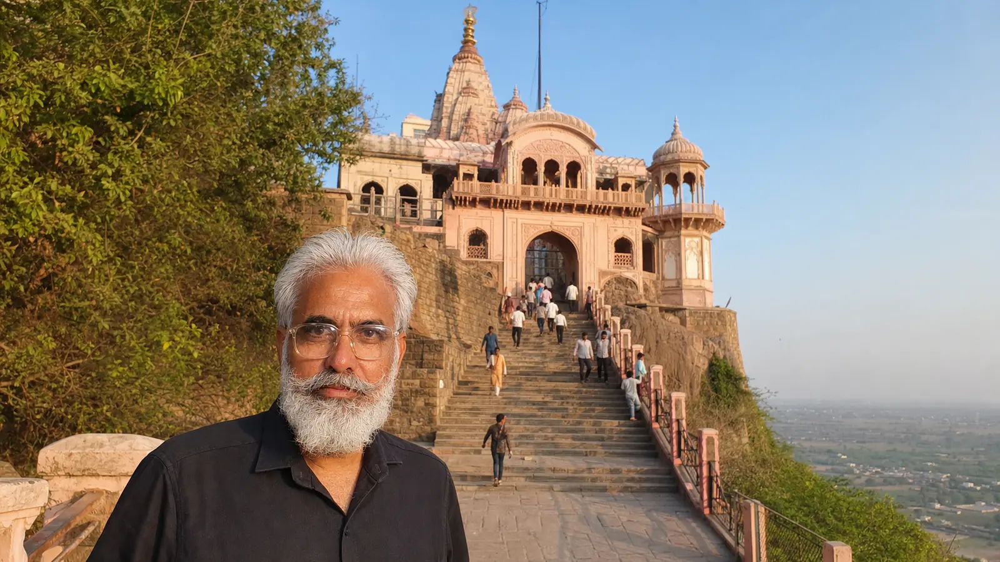

Total circuit: roughly 350–380 km
Duration: about 12–13 hours door to door
Start time: 4:30–5:00 AM pickup from Agra
Usual order: Mehandipur Balaji first, Kaila Devi in the afternoon
Easier option: 2-day version with a night halt in Karauli
Yes — Kaila Devi and Mehandipur Balaji can be covered in a single day from Agra. The full circuit runs roughly 350–380 km and takes about 12–13 hours door to door, with around 7 hours of driving. Thousands of pilgrim families make this exact trip every year. But it only works well when it's planned honestly — which is what this guide is for.
Padma Shree Travels runs this route with fixed-fare AC cabs and verified local drivers. WhatsApp +91 87200 81102 for today's fare.
Everything about this day depends on the 4:30–5:00 AM pickup. Leaving early means you reach Mehandipur Balaji by around 7:30–8:00 AM — before the main crowd builds — which protects the rest of your schedule. Every hour of delay at the start compounds through the day and pushes your return past 10 PM. If a pre-dawn start isn't realistic for your group, that's your first signal to consider the 2-day version instead.
On most days the circuit runs: Agra → Mahwa → Mehandipur Balaji (morning darshan) → Karauli → Kaila Devi (afternoon darshan) → Hindaun → Agra. Balaji first usually works best — you beat the heaviest crowd there, and the afternoon suits the Kaila Devi leg. On certain dates, and during Navratri, the reverse order is better; our drivers run this circuit regularly, so tell us your date and we'll recommend the right sequence.
| Time | Plan |
|---|---|
| 4:30–5:00 AM | Pickup from your Agra hotel or home |
| 7:30–8:00 AM | Mehandipur Balaji darshan (2.5–3 hrs; driver waits at parking) |
| 11:00 AM | Depart for Kaila Devi via Karauli, lunch stop on the way |
| 2:00 PM | Kaila Devi darshan (1.5–2 hrs) |
| 4:15 PM | Optional 30-minute stop at Madan Mohan Ji Temple, Karauli town |
| 8:30–9:30 PM | Return to Agra |
Be honest with yourself about this one. The single-day circuit is long — roughly 13 hours with 7 hours of driving. The 2-day version with a night halt in Karauli turns the same yatra into a genuinely restful trip: Day 1 covers Balaji darshan and Karauli town; Day 2 gives you unhurried Kaila Devi darshan and an easy return. Choose it if your group includes elderly members, young children, or anyone for whom a pre-dawn-to-late-night day sounds more like an endurance test than a pilgrimage.
We'd rather tell you upfront: this is a rewarding but demanding day. It suits groups comfortable with an early start and a late return. If that's not your group, the 2-day fare is worth asking about — many families tell us it was the better decision.
For this circuit we consistently recommend the Innova Crysta — easier boarding, a softer ride on the longer Rajasthan stretches, and more room to rest between temples. At Kaila Devi there's a walking stretch from the parking to the temple; the driver drops you at the closest permitted point, but be prepared for some walking, especially during Navratri when routes near the temple are diverted.
Four things worth confirming with any operator (we answer all of them in writing on WhatsApp): the exact pickup time and realistic return time; what the fare includes and what's extra (tolls, Rajasthan state tax, parking); whether waiting at both temples is included; and the 2-day option's fare, so you can compare honestly. See the full plan on our Karauli, Kaila Devi & Balaji tour package page, or the single-temple pages for Mehandipur Balaji and Kaila Devi if you'd rather do one at a time. Karauli town itself — Madan Mohan Ji Temple and the City Palace — has its own Agra to Karauli taxi page, and our Rajasthan temple tour planner covers longer multi-day yatras.
Yes. The full circuit is roughly 350–380 km and takes about 12–13 hours door to door with a 4:30–5:00 AM start. It's a long day, but thousands of pilgrim families do it every year with proper planning.
On most days, Mehandipur Balaji first — you arrive before the main crowd, and the afternoon suits the Kaila Devi leg. On some dates and during Navratri the reverse order works better; we advise the best sequence for your specific date when you message us.
Yes — a 2-day version with a night halt in Karauli. Day 1: Balaji darshan and Karauli town; Day 2: unhurried Kaila Devi darshan and return. It's the version we recommend for groups with elderly members.
It can be, with the right choices — the Innova Crysta for the long drive, planned breaks, and honestly, the 2-day version if long days are difficult for anyone in your group. A 12–13 hour day is genuinely tiring, so don't overcommit elders to the single-day plan.
Fuel, driver, the driver's full-day allowance, and waiting at both temples within the tour day. Tolls, Rajasthan state tax, and parking are extra at actuals — the expected amounts are told to you on WhatsApp before you confirm.
One car, one driver, one fixed price — or the relaxed 2-day version. Your choice.